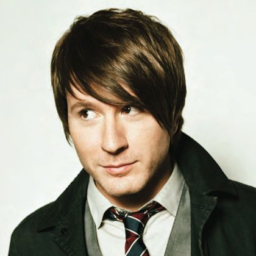

About

Adam Randal Young (born July 5, 1986) is Owl City's founder and only constant member. He was born in Ottumwa, Iowa and raised in Owatonna, Minnesota, where he graduated from Owatonna Senior High School and then found work at a Coca-Cola shipping warehouse. He began composing melodies in his head while working, which he would then record in his studio in his parents' basement.
Young is a devout Christian and stated that his faith is the only thing more important to him than music. He has described himself as introverted and believes he has symptoms of Asperger syndrome; however, it has not been diagnosed.